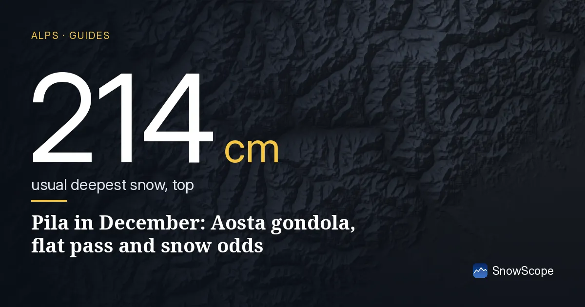

Pila فشهر دجنبر: التلفريك ديال Aosta، تمن موحد، وتوقعات التلج
Pila كاينة نيشان فوق Aosta، وكتوصل ليها بالتلفريك من المدينة. التلج فدجنبر كيعتمد على العلو. البيستات لتحت فـ 1533 م كيكون التلج فيها قليل فبداية الشهر، فاش البيستات اللي قراب لـ 2723 م كيكون فيهم فالمعدل 80 سم. مع تمن موحد ديال 60.00 EUR للنهار طيلة الموسم، التخطيط للويكاند كيجي ساهل.
شوف توقعات التلج مباشرة ديال Pila فالتطبيق ديال SnowScopeالعلو ديال التلج، التنبيهات والخريطة 3D، فابور.
من Aosta للبيستات
إيلا كنتي جاي باللوطو فالويكاند، تقدر توقف فـ Aosta وتركب فالتلفريك نيشان لـ Pila. المحطة فيها 56 كم ديال البيستات و16 ديال المصاعد، كيبداو من 1533 م فالتحت حتى لـ 2723 م فالفوق، يعني فرق فالعلو ديال 1190 م.
اليوم، 13 نونبر 2026، تقديرات التلج كتبين بداية مبكرة: 0 سم فالباز (1533 م)، 4 سم فوسط الجبل (2128 م)، و14 سم فالفوق (2723 م). فالسيمانات الجاية، التقديرات كتقول غيكون 26 سم ديال التلج جديد فالباز، 53 سم فوسط الجبل، و70 سم فالفوق، فاش التوقعات ديال سيمانتين لوسط الجبل والفوق من 13 لـ 26 نونبر كتحصر ما بين 52 و74 سم.

تمن واحد طيلة الشتا
فالموقع الرسمي، تمن الباس ديال نهار واحد للبالغين هو 60.00 EUR، تمن موحد طيلة الموسم، من 28 نونبر 2026 حتى لـ 11 أبريل 2027. ما محتاجش تقلب على تواريخ بعيدة باش تهرب من غلا الويكاند.
للي بغا يبقا بزاف، الباس ديال 6 أيام للبالغين لشتا 2026-27 كيدير 322.00 EUR. هاد التمن الموحد كيخلي التخطيط لويكاند فدجنبر ساهل قبل ما تخرج من داركم.
احتمالات التلج على حساب العلو
فالتاريخ ديالنا ديال التلج ديال 46 شتوة اللي فاتو (من 1980-81 حتى لـ 2025-26)، لتحت فالمحطة (1533 م) غالبا كيكون التلج قليل فدجنبر. كيكون فالمعدل 34 سم فدجنبر عادي (16 سم فشتوة ناقصة، و60 سم فشتوة عامرة) وكيغطي 30 سم أو كتر فـ 41 %، 52 %، 59 %، و78 % من الشتوات اللي فاتو عبر سيمانات دجنبر الأربعة، مع 50 سم أو كتر فـ 9 %، 15 %، 26 %، و30 % فقط من الشتوات اللي فاتو.
وسط الجبل (2128 م) كيكون فيه فالمعدل 45 سم (21 سم ناقص، 78 سم عامر)، وكيغطي 30 سم أو كتر فـ 50 %، 76 %، 85 %، و89 % من الشتوات اللي فاتو، و50 سم أو كتر فـ 26 %، 33 %، 41 %، و59 % من الشتوات اللي فاتو. الفوق (2723 م) كيكون فيه فالمعدل 80 سم (37 سم ناقص، 138 سم عامر)، وكيضرب 30 سم أو كتر فـ 87 %، 93 %، 98 %، و98 % من الشتوات اللي فاتو، و50 سم أو كتر فـ 57 %، 78 %، 89 %، و89 % من الشتوات اللي فاتو. باش تضمن التلج، برمج السفر ديالك من نص دجنبر للفوق وسكي من وسط الجبل للفوق.
Pila مقارنة بـ La Thuile
La Thuile (فرنسا / إيطاليا) عندها محطة كبر بـ 79 كم ديال البيستات و17 مصعد ما بين 1468 م و2608 م، بفرق علو ديال 1140 م. فالتاريخ ديالنا، المعدلات ديال دجنبر فيها كتر: 44 سم فالباز (1468 م، 17 سم ناقص، 92 سم عامر) و67 سم فوسط الجبل (2038 م، 31 سم ناقص، 129 سم عامر)، فين 30 سم أو كتر كتوصل لـ 78 %، 91 %، 100 %، و100 % من الشتوات اللي فاتو.
فالفوق (2608 م)، La Thuile كيكون فيها فالمعدل 98 سم (47 سم ناقص، 173 سم عامر)، وكتوصل لـ 50 سم أو كتر فـ 76 %، 85 %، 93 %، و98 % من الشتوات اللي فاتو عبر سيمانات دجنبر الأربعة، مع 48 %، 67 %، 76 %، و87 % من الشتوات اللي فاتو لـ 30 سم أو كتر فالباز ديالها. La Thuile كتعطي احتمالات تلج حسن فدجنبر، واخا ما شفناش تمن الباس فالموقع الرسمي ديالها.
الاتجاهات عبر 46 شتوة اللي فاتو
ما بين أول 15 شتوة (1980-81 لـ 1994-95) وآخر 15 شتوة (2011-12 لـ 2025-26)، المعدل ديال نص دجنبر فـ Pila طلع شوية من 31 سم لـ 36 سم فالباز، ومن 42 سم لـ 49 سم فوسط الجبل، ومن 74 سم لـ 84 سم فالفوق.
الشتوات كيبقاو يتبدلو بزاف. الشتا اللي فاتت (2025-26) كان فيها فالمعدل 27 سم فالباز، 39 سم فوسط الجبل، و74 سم فالفوق، فاش أقل دجنبر فالتلج (2015-16) نزل لـ 14 سم، 16 سم، و26 سم مقابل أكتر دجنبر (1982-83) بـ 67 سم، 88 سم، و158 سم. التلج اللي كيبقى كيبدا غالبا فـ 10 أكتوبر فالفوق و26 أكتوبر فالباز، وكيزيد حتى كيوصل للقمة ديال الموسم بـ 81 سم، 116 سم، و214 سم.
نصايح للي كيتزلجو
- شري الباس ديال نهار واحد للبالغين بـ 60.00 EUR أو الباس ديال 6 أيام بـ 322.00 EUR من الموقع الرسمي، حيت التمن كيبقى موحد من 28 نونبر 2026 حتى لـ 11 أبريل 2027.
- برمج السفر ديالك ما بين 15-21 دجنبر أو 22-28 دجنبر باش تلقى تلج كتر، فين وسط الجبل (2128 م) كيوصل لـ 30 سم أو كتر فـ 85 % و89 % من الشتوات اللي فاتو.
- بقا فالمصاعد الفوقانية اللي قراب لـ 2723 م إيلا مشيتي فالسيمانات اللولين ديال دجنبر، فين 30 سم أو كتر كيكون فـ 87 % و93 % من الشتوات اللي فاتو.
- شوف النشرة ديال الانهيارات قبل ما تخرج للبيست، خصوصا بعد العواصف اللولى بحال التوقعات ديال 52 لـ 74 سم ديال سيمانتين لوسط الجبل والفوق.
خرائط أخرى (مواقع خارجية)
المراجع والمصادر
- Pila, official daily ski pass prices 2026-27 pila.it/en/skipass-pila/daily-skipass/
- SnowScope, December snow at three heights and today's snow map snowscope.app/
على هاد الأرقام
الأرقام ديال التلج: التاريخ ديال التلج ديال SnowScope، 46 شتوة اللي فاتت (1980-81 حتى ل 2025-26) فتلاتة ديال العلوات فكل محطة (موديل ديال اللي فات مصحح بالعلو: تقدير لمنطقة، ماشي قياسات ديال المحطة)؛ أرقام دجنبر محسوبة من العلو اليومي ديال التلج فهاد الشتوات. التلج دابا والتوقعات ديال جوج سيمانات: توقعات SnowScope (من ECMWF و GFS، مجال ماشي وعد). التيليسييجات والبيستات: الخريطة ديال OpenSkiMap. الأثمنة: الصفحات الرسمية اللي لتحت، متشافة نهار 2026-11-13؛ الأثمنة تقدر تتبدل، شوف قبل ما تحجز.
النشرات الرسمية ديال الانهيارات: AINEVA – Associazione Interregionale Neve e Valanghe
كيفاش تستاشهد بهاد المقال
للبحث، التعليم ولا الصحافة: الأرقام والرسومات تقدر تعاود تخدم بيهم بحرية تحت CC BY 4.0 مع هاد الاستشهاد.
SnowScope (2026), Pila فشهر دجنبر: التلفريك ديال Aosta، تمن موحد، وتوقعات التلج, https://snowscope.app/blog/ar/2026/11/pila-aosta-december-ski-flat-price-snow-2026.html, تشاف ف 2026-11-14
SnowScope (Atlas Labs). (2026, November 14). Pila فشهر دجنبر: التلفريك ديال Aosta، تمن موحد، وتوقعات التلج. SnowScope snow reports. https://snowscope.app/blog/ar/2026/11/pila-aosta-december-ski-flat-price-snow-2026.html
BibTeX
@misc{snowscope2026pilaaostadecemberskiflat,
author = {{SnowScope (Atlas Labs)}},
title = {Pila فشهر دجنبر: التلفريك ديال Aosta، تمن موحد، وتوقعات التلج},
year = {2026},
month = nov,
howpublished = {\url{https://snowscope.app/blog/ar/2026/11/pila-aosta-december-ski-flat-price-snow-2026.html}},
note = {Published 2026-11-14 13:29 UTC; accessed 2026-11-14}
}· CC BY 4.0 · الطريقة، الداتا والأدوات →
Pila: التلج والحرارة حسب العلو، هاد الشتا مقارنة مع اللي فاتت (الأدوات) →
تابع Pila
فابور: ميساج ملي يجي التلج، والتوقعات كل صباح.